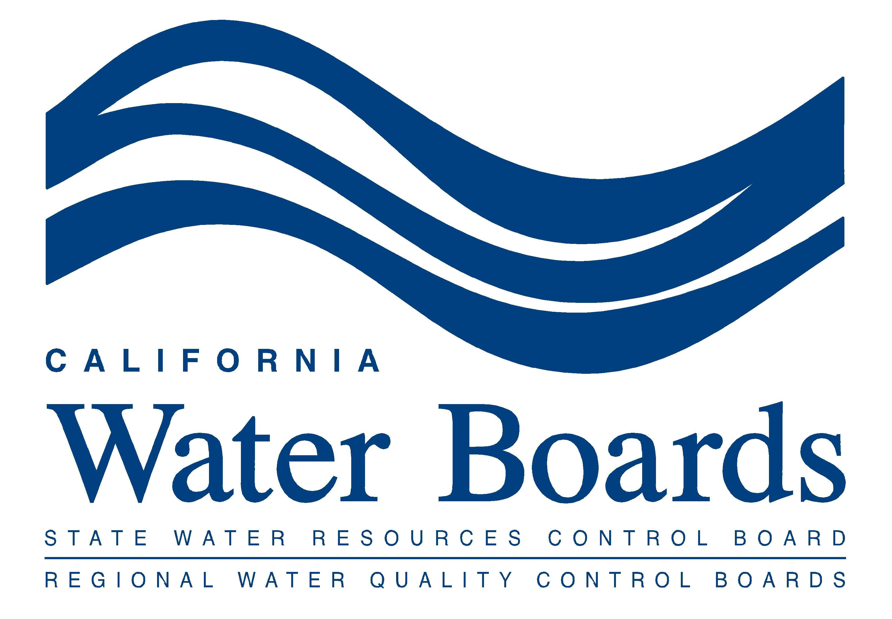
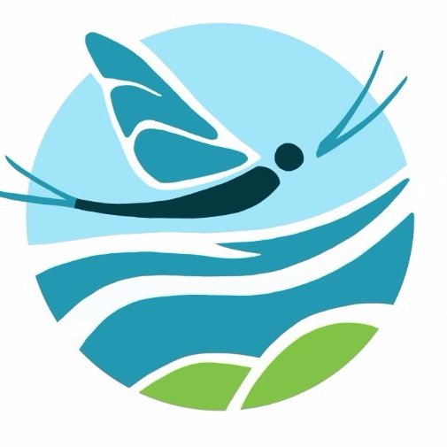
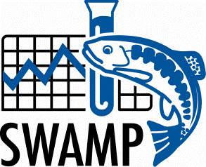

The CalSFS-CABW meeting will be held virtually on October 12-13, 2021. Visit the CABW page to register for the meeting and submit your abstracts for posters and talks!
Upcoming Deadlines:
Learn more about CalSFS by visiting the Society for Freshwater Science’s Cal-Chapter page.
More Info:
See the Meeting Agendas tab for more details on past/upcoming meetings.
This collaborative group asks that all participants follow the SFS Code of Conduct, whether virtual or in person. For concerns or issues please contact: Shuka Rastegarpour
site updated: 2021-09-22 16:20
☵ Website design by Ryan Peek ☵